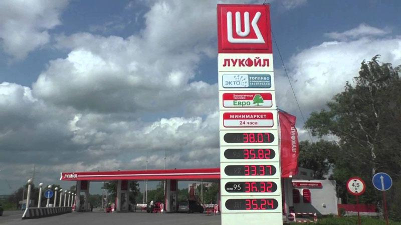
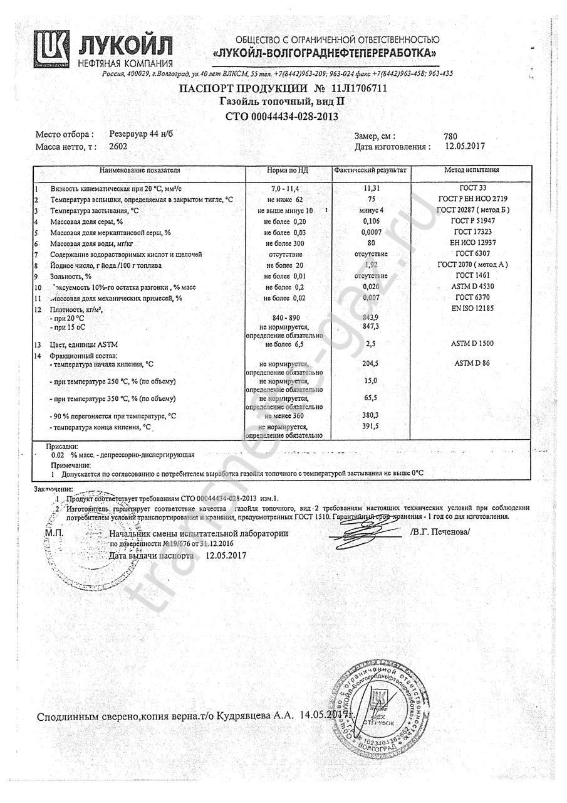

ЛУКОЙЛ - Бензин и дизельное топливо

Меня интересует
Инвесторы Автомобилисты OK Страница будет перезагружена после нажатия кнопки ОК. ВиджетыЛУКОЙЛ сегодня
ЛУКОЙЛ — одна из крупнейших вертикально интегрированных нефтегазовых компаний в мире, на долю которой приходится более 2% мировой добычи нефти и около 1% доказанных запасов углеводородов.
Выбор страны Гана Египет Ирак Камерун Мексика Нигерия Норвегия Россия Румыния Узбекистан Гана Египет Ирак Камерун Мексика Нигерия Норвегия Россия Румыния Узбекистан Азербайджан Египет Ирак Казахстан Россия Узбекистан Азербайджан Египет Ирак Казахстан Россия Узбекистан Болгария Италия Нидерланды Россия Румыния Украина Болгария Италия Нидерланды Россия Румыния Украина Болгария Россия Румыния Болгария Россия Румыния Азербайджан Бельгия Болгария Грузия Италия Македония Нидерланды Россия Румыния Сербия США Турция Финляндия Хорватия Черногория Молдова Беларусь Азербайджан Бельгия Болгария Грузия Италия Македония Нидерланды Россия Румыния Сербия США Турция Финляндия Хорватия Черногория Молдова Беларусь Глобальный бизнес ru en Сеть АЗС Тендеры Вакансии Контакты A A A Компания Бизнес Инвесторы Пресс-центр Продукция Ответственность Сеть АЗС Тендеры Вакансии Контакты О Компании Бизнес-модель Бизнес-модель ЛУКОЙЛ в России и мире Организации Группы Карьера Карьера ЛУКОЙЛ как работодатель Истории успеха Вакансии ЛУКОЙЛ и молодежь Корпоративнoe управление Корпоративнoe управление Совет директоров Правление Доли членов Совета директоров и Правления Вознаграждение членов Совета директоров и Правления Внутренние документы История Павильон №25 «Нефть». ВДНХ Музей Тендеры и аукционы Тендеры и аукционы Тендеры, проводимые ПАО «ЛУКОЙЛ» Реализация непрофильных активов Юридическая информация Юридическая информация Обработка персональных данных Обеспечение страховой защиты Корпоративные награды Стопкоронавирус Личный кабинет контрагента ЛУКОЙЛ, стабильно развиваясь на протяжении более чем 20 лет, является одной из наиболее эффективных компаний российского нефтегазового сектора. Компания Технологии и инновации Технологии и инновации Технологии Инновационное сотрудничество Стандартизация Цифровизация Разведка и добыча Разведка и добыча Проекты роста Россия Зарубежные проекты Запасы Разведка Добыча Переработка и сбыт Переработка и сбыт Нефтепереработка Газопереработка Нефтехимия Энергетика Приоритетные каналы сбыта Оптовая реализация и трейдинг Вертикальная бизнес-модель Компании создана для организации эффективной работы всех сегментов и отвечает стратегическим целям в интересах всех заинтересованных сторон. Бизнес Отчетность и презентации Отчетность и презентации День инвестора Финансовые результаты Календарь инвестора Годовой отчет Справочник аналитика Отчет об устойчивом развитии Презентации IR-релизы Ценные бумаги Ценные бумаги Дивиденды Обратный выкуп акций Акционерный капитал Депозитарные расписки Облигации Сервисы инвесторам и акционерам Аналитики Собрание акционеров Акционерам Акционерам Регистратор Личный кабинет Часто задаваемые вопросы Контакты Раскрытие информации Раскрытие информации Ежеквартальные отчеты эмитента Существенные факты Аффилированные лица Инсайдерам Бухгалтерская отчетность по РСБУ Инвесторы Пресс-релизы Медиатека Лента событий Библиотека Сервисы для журналистов Корпоративные СМИ ЛУКОЙЛ в социальных сетях Контакты для СМИ ЛУКОЙЛ неизменно демонстрирует общественности свою информационную открытость и высоко ценит внимание, проявленное к достижениям компании. Пресс-центр Автомобилистам Автомобилистам Сеть АЗС Акции Масла и автохимия Топливо Клуб ЛУКОЙЛ Поддержка Бизнесу Бизнесу Нефтепродукты Газ Нефтехимическая продукция Для авиации Для судов Масла и технические жидкости Топливные карты Совместный бизнес на АЗС Нефтетрейдинг Бренды Бренды ЭКТО 100 Топливо ЭКТО Масла GENESIS Экологичное топливо ЕВРО Обладая хорошо диверсифицированной сбытовой сетью, ЛУКОЙЛ реализует собственные высококачественные нефтепродукты на розничном рынке. Продукция Устойчивое развитие Социальное инвестирование Социальное инвестирование Социальные инициативы Взаимодействие с регионами Взаимодействие с коренными малочисленными народами Севера Конкурс социальных проектов Экология Изменение климата Управление промышленной и экобезопасностью Безопасность труда Социальное партнерство Социальное партнерство Политика управления персоналом Социальный кодекс Охрана труда Взаимодействие с профсоюзом Пенсионное обеспечение сотрудников Социальные программы Молодежная политика Антимонопольная политика В своей деятельности Компания руководствуется принципами устойчивого развития и старается достичь равновесия между социально-экономическим и природно-экологическим развитием. ОтветственностьБензин и дизельное топливо
Предыдущая Следующая Продукция Бизнесу Нефтепродукты Бензин и дизельное топливо
На нефтеперерабатывающих заводах в России ЛУКОЙЛ производит автомобильный бензин и дизельные топлива, соответствующие 5 классу Технического регламента РФ. Компания реализует автомобильный бензин и дизельные топлива крупным и мелким оптом. Оператором по поставке моторных топлив в Группе «ЛУКОЙЛ» является дочернее общество ООО «ЛУКОЙЛ-Резервнефтепродукт».
Поставка топлив ж/д транспортом
Компания реализует автомобильный бензин и дизельные топлива крупным и мелким оптом. Крупнооптовые поставки осуществляются с возможностью отгрузки железнодорожным транспортом. Заявки на приобретение любых видов автомобильных бензинов и дизельного топлива принимаются через Cлужбу единого окна . Срок рассмотрения заявки составляет 10 календарных дней. В течение этого срока с Вами свяжутся сотрудники Компании.
Регистрация в Службе единого окнаОтгрузка в автоцистернах
Организации Группы «ЛУКОЙЛ» осуществляют реализацию моторных топлив мелким оптом с возможностью отгрузки автомобильным транспортом с нефтебаз в регионах Европейской части России и на Урале. Полную информацию и контакты для закупки топлива можно получить на сайте организации Группы, осуществляющей реализацию продукции в конкретном регионе. Для перехода на сайт воспользуйтесь картой регионов сбыта.
Торговые политики Группы «ЛУКОЙЛ»
ЛУКОЙЛ при оптовой реализации автомобильных бензинов и дизельного топлива руководствуется следующими основными принципами:
приоритетность поставок на внутренний рынок РФ; обеспечение недискриминационных условий покупателям; информационная открытость организаций Группы «ЛУКОЙЛ».Эти принципы закреплены в торговых политиках Группы «ЛУКОЙЛ» в области оптовой реализации автомобильных бензинов и дизельного топлива в Российской Федерации, которые согласованы с Федеральной антимонопольной службой.
Торговая политика по автомобильным бензинам Торговая политика по дизельному топливуАкции
Акции
Поиск АЗС ЛУКОЙЛ
Ближайшие АЗС Масла ЛУКОЙЛ Особенности Топливо Сервисы Режим работы АЗС Магазин Способы оплаты Сбросить фильтры показать ещё Построение маршрута Откуда Куда Добавить точку Автомобиль Объем бака, л Топливо Расход, л/100км Построить маршрут Параметры маршрута Общее расстояние Необходимый объем топлива Внимание! Данный расчет является приблизительным и служит для оценочного информирования пользователя. Реальные параметры маршрута могут отличаться. показать ещеГде купить или заменить масло
Ближайшие точки Продукция ЛУКОЙЛ ЛЮКС LUKOIL GENESIS Сбросить фильтрыПостроить маршрут
Расстояние: Необходимое топливо: Построить маршрут
Внимание! Недостаточно топлива для маршрута. Пожалуйста, измените точки маршрута.
Особенности Топливо Сервисы Акции Акции показать ещёНефтебазы
Обслуживающая компания Сбросить фильтрыпоказать ещё
Бункеровка в крыло
Сбросить фильтрыпоказать ещё
Портовый сервис
Обслуживающая компания Сбросить фильтрыпоказать ещё
Портовый сервис
Наличие масел:
Комментарий:
показать ещё Узнать больше > > Данная АЗС сейчас находится на реконструкции Построить маршрут Топливо Горячая линия Сервисы
Описание
Описание Построить маршрут
Способ доставки Минимальное количество для доставки Необходимый нотис, рабочих дней
Комментарий:
Наличие масел:
Вас может также заинтересовать
Топливо ЭКТО
Моторные масла GENESIS
Автомобилистам
Центр Связи
Написать обращение Часто задаваемые вопросы Контакты ПодпискаПоделиться
Facebook Twitter ВКонтакте Одноклассники БольшеИзбранное
Добавить в избранноеОптовая продажа топлива
Газовое топливо Для судов для авиации Всегда в движении Перейти к мoбильной версии сайта Перейти к полной версии сайтаТеги
Ключевые проекты Инновационное сотрудничество МедиатекаИнформация
Обработка персональных данных Контакты Часто задаваемые вопросы Заявление об ответственности Сеть АЗС Предупреждение о мошенникахПрисоединиться
ЛУКОЙЛ в мире
Азербайджан Беларусь Бельгия Болгария Гана Грузия Египет Ирак Испания Италия Казахстан Камерун Люксембург Македония Мексика Молдова Нигерия Нидерланды Норвегия Россия Румыния Сербия США Турция Узбекистан Украина Финляндия Хорватия ЧерногорияГруппа ЛУКОЙЛ
«ЛУКОЙЛ Ейвиейшън Булгария» ЕООД «ЛУКОЙЛ Нефтохим Бургас» АД ЗАО «ЛУКОЙЛ-Азербайджан» ИООО «ЛУКОЙЛ Белоруссия» ЛУКОИЛ МАКЕДОНИЙА ДООЕЛ Скопье ЛУКОИЛ Сербия АД Белград ООО «ЛУКОЙЛ ЛУБРИКАНТС УКРАИНА» ООО «ЛУКОЙЛ-КГПЗ» ООО «ЛУКОЙЛ-ПЕРМЬ» АО «ЛУКОЙЛ-Черноморье» АО «ТЗК-Архангельск» И.К.С. ЛУКОЙЛ-Молдова СРЛ Исаб С.р.л. Литаско СА ЛУКОЙЛ Интернэшнл Апстрим Вест Инк ЛУКОЙЛ Италия С.р.л. ЛУКОЙЛ Кроатиа Лтд. ЛУКОЙЛ Мид-Ист ЛУКОЙЛ Монтенэгро лимитед лайабилити компани Подгорица ЛУКОЙЛ Романия С.Р.Л. ЛУКОЙЛ Эккаунтинг энд Файнэнс Юроп с.р.о. ЛУКОЙЛ-МаринБункер Образовательное частное учреждение дополнительного профессионального образования «Корпоративный учебный центр» ООО ＂ЛУКОЙЛ Норт Америка＂ ООО «АЭРО-НЕФТО» ООО «ЛИКАРД» ООО «ЛЛК-Интернешнл» ООО «ЛУКОЙЛ-Астраханьэнерго» ООО «ЛУКОЙЛ-АЭРО» ООО «ЛУКОЙЛ-АЭРО-Волгоград» ООО «ЛУКОЙЛ-АЭРО-Восток» ООО «ЛУКОЙЛ-АЭРО-Нижний Новгород» ООО «ЛУКОЙЛ-АЭРО-Пермь» ООО «ЛУКОЙЛ-АЭРО-Самара» ООО «ЛУКОЙЛ-АЭРО-Тюмень» ООО «ЛУКОЙЛ-АЭРО-Челябинск» ООО «ЛУКОЙЛ-Волганефтепродукт» ООО «ЛУКОЙЛ-Волгограднефтепереработка» ООО «ЛУКОЙЛ-Волгоградэнерго» ООО «ЛУКОЙЛ-Западная Сибирь» ООО «ЛУКОЙЛ-Инжиниринг» ООО «ЛУКОЙЛ-КМН» ООО «ЛУКОЙЛ-Коми» ООО «ЛУКОЙЛ-Кубаньэнерго» ООО «ЛУКОЙЛ-Нижегороднефтеоргсинтез» ООО «ЛУКОЙЛ-Нижегородниинефтепроект» ООО «ЛУКОЙЛ-Нижневолжскнефтепродукт» ООО «ЛУКОЙЛ-Нижневолжскнефть» ООО «ЛУКОЙЛ-Пермнефтеоргсинтез» ООО «ЛУКОЙЛ-Пермнефтепродукт» ООО «ЛУКОЙЛ-Ростовэнерго» ООО «ЛУКОЙЛ-Северо-Западнефтепродукт» ООО «ЛУКОЙЛ-Ставропольэнерго» ООО «ЛУКОЙЛ-Технологии» ООО «ЛУКОЙЛ-Транс» ООО «ЛУКОЙЛ-Узбекистан Оперейтинг Компани» ООО «ЛУКОЙЛ-Уралнефтепродукт» ООО «ЛУКОЙЛ-Ухтанефтепереработка» ООО «ЛУКОЙЛ-Центрнефтепродукт» ООО «ЛУКОЙЛ-ЦУР» ООО «ЛУКОЙЛ-Черноземьенефтепродукт» ООО «ЛУКОЙЛ-Экоэнерго» ООО «ЛУКОЙЛ-Энергоинжиниринг» ООО «ЛУКОЙЛ-ЭНЕРГОСЕРВИС» ООО «ЛУКОЙЛ-ЭНЕРГОСЕТИ» ООО «ЛУКОЙЛ-Югнефтепродукт» ООО «РИТЭК» ООО «Саратоворгсинтез» ООО «Ставролен» ООО ЛУКОЙЛ ЛУБРИКАНТС АФРИКА Петротел-ЛУКОЙЛ С.A. ТОО «ЛУКОЙЛ Лубрикантс Центральная Азия»Поиск
© 2020 ЛУКОЙЛ